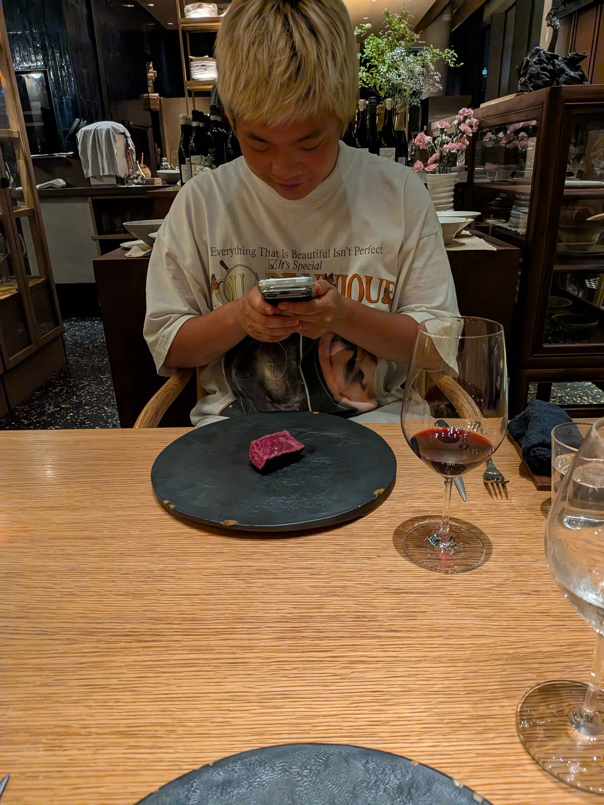

My Personal Website
たまきのホームページ
鋭意制作中
自己紹介
こんにちは！たまきです！

彼女募集中です。
リンク集
💡 おすすめの外部ページやプロジェクトへのリンクです：
たまきのインスタ:
こちら
くろだのインスタ:
こちら
原さんのスタンプ:
こちら
テキーラタワーバトル(制作中):
こちら
これからの目標
オリジナルの画像やグラフィックアセットをたくさん配置する
レイアウトやカラーを洗練させて、より見やすいデザインにする
スマートフォンやタブレットなど、あらゆる画面サイズに最適化する